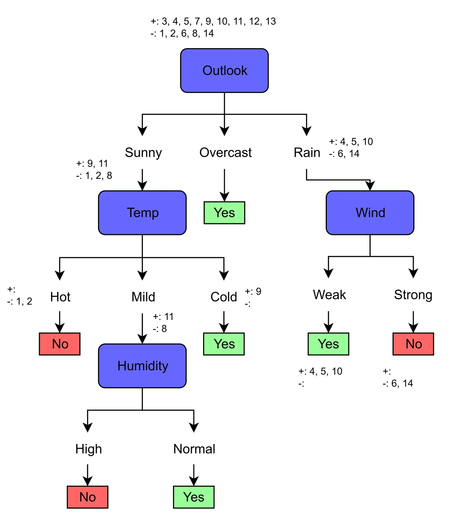
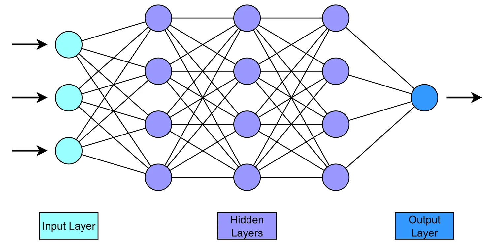
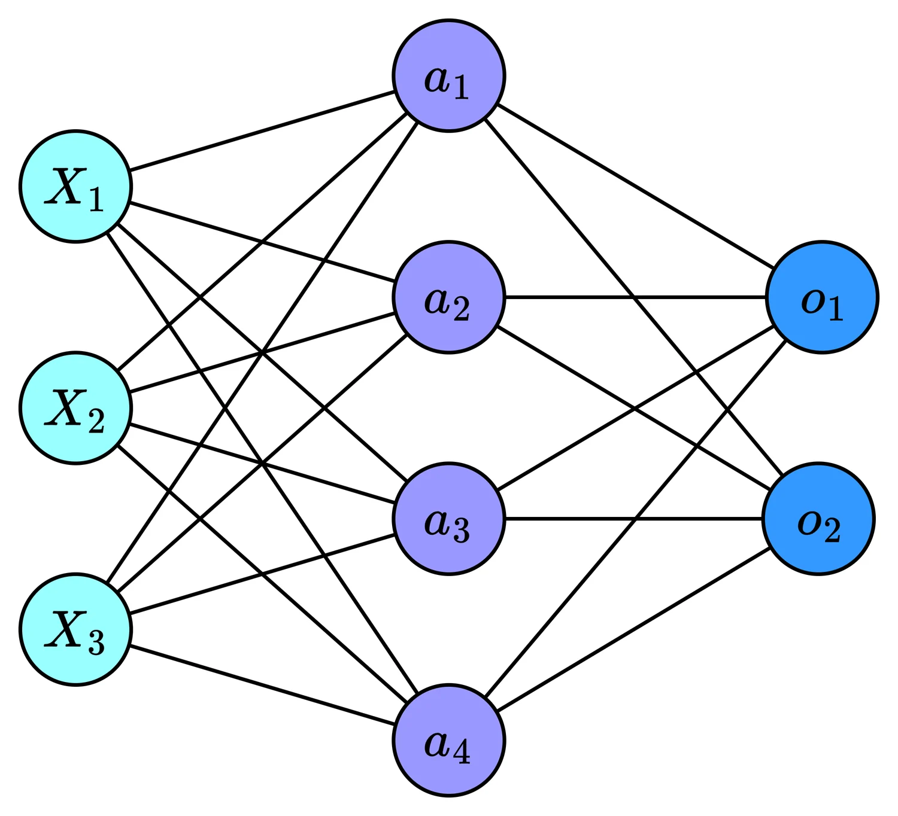
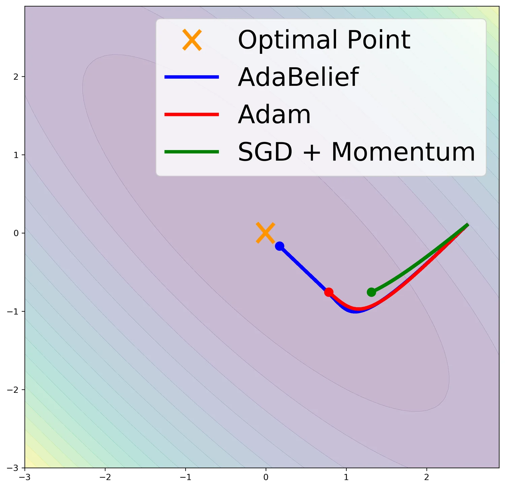
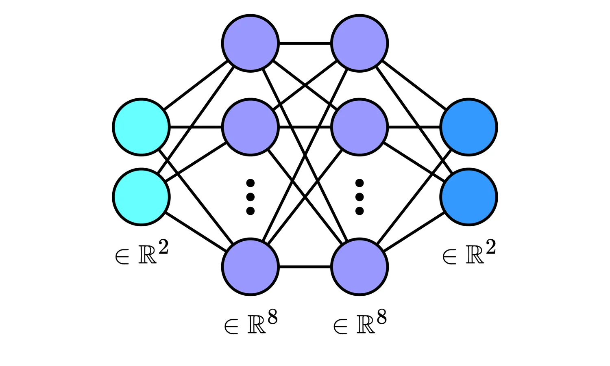

Trees & Neural Networks
Two models that could hardly be more different. Decision trees are transparent, discrete and greedy — you can read one aloud. Neural networks are opaque, continuous and trained by gradient descent. Between them they cover most of what people mean by "machine learning".
Part 4.1 · Decision Trees
A decision tree asks a sequence of questions about a sample's features and follows the answers down to a prediction. That is genuinely the whole model — which is why a trained tree can be printed on a page and handed to someone who has never heard of machine learning.
A decision tree is a rooted tree in which
- each internal node tests a single feature,
- each branch corresponds to one outcome of that test,
- each leaf carries a class label (or, for regression, a value).
To classify an example, start at the root, evaluate the test, follow the matching branch, and repeat until you reach a leaf. The leaf's label is the prediction.
Building a tree: the ID3 algorithm
The obvious question is which feature to test first. Ideally we would find the ordering that produces the smallest possible tree — but searching over all orderings is computationally hopeless. Instead ID3 uses a greedy strategy: at each node, pick whichever single feature looks best right now, with no lookahead at all.
- If a stopping condition applies, make a leaf.
- Otherwise, score every remaining feature and pick the one that reduces uncertainty the most.
- Split the samples by that feature's values and recurse on each subset.
Greedy means the tree can be permanently worse than necessary: a feature that looks mediocre alone might be excellent in combination with another, and ID3 will never discover that. XOR is the standard example — neither input predicts the output on its own, so a greedy criterion sees nothing worth splitting on, even though the pair determines the label exactly. Finding the smallest consistent tree is NP-hard, which is why every practical algorithm is greedy.
Stopping conditions
Recursion halts under one of three base cases:
- All samples belong to the same class → create a leaf with that label.
- No features left → return the majority class among the remaining samples.
- No samples left → return the majority class of the parent node.
Cases 2 and 3 both force a decision under genuine uncertainty. Case 2 arises when two samples share every feature value but differ in label — the data simply cannot distinguish them. Case 3 arises when a feature value appears in the branch but no training sample reaches it, so the node has nothing local to go on and must borrow from its parent.
Entropy: measuring uncertainty
The entropy of a distribution over classes \(c_1, \dots, c_k\) is
\[ I\big(P(c_1), \dots, P(c_k)\big) = -\sum_{i=1}^{k} P(c_i)\log_2 P(c_i). \]For binary classification with proportions \((p, 1-p)\),
\[ H(p) = -p\log_2 p - (1-p)\log_2(1-p), \]which is maximal at \(p = 0.5\) (\(H = 1\) bit, complete uncertainty) and zero at \(p = 0\) or \(p = 1\) (full certainty).
Entropy, Gini and misclassification
All three impurity measures on one axis. Note where they peak, and by how much they differ.
Maximum uncertainty. Two equally likely outcomes, \(p = 0.5\):
\[ H = -0.5\log_2 0.5 - 0.5\log_2 0.5 = -2 \times 0.5 \times (-1) = 1 \text{ bit.} \]A fair coin. Each observation carries exactly one bit, because you genuinely could not have guessed it.
Low uncertainty. One class occurs 99% of the time:
\[ H = -0.01\log_2 0.01 - 0.99\log_2 0.99 \approx 0.0664 + 0.0144 \approx 0.081 \text{ bits.} \]A coin that lands heads 99% of the time tells you almost nothing when you flip it. Predicting "heads" every time is right 99% of the time — so there is very little information left to gain.
Expected information gain
The information gain of a feature is the uncertainty before splitting minus the expected uncertainty after:
\[ \text{InfoGain} = I_{\text{before}} - I_{\text{after}}. \]For \(p\) positive and \(n\) negative examples,
\[ I_{\text{before}} = I\!\left(\frac{p}{p+n}, \frac{n}{p+n}\right), \qquad I_{\text{after}} = \sum_{i=1}^{k} \frac{p_i + n_i}{p+n}\, I\!\left(\frac{p_i}{p_i+n_i}, \frac{n_i}{p_i+n_i}\right). \]The second term is a weighted average: each child contributes in proportion to how many samples land in it. At each node we select the feature with the highest gain.
The Play Tennis example
| Day | Outlook | Temp | Humidity | Wind | Tennis? |
|---|---|---|---|---|---|
| 1 | Sunny | Hot | High | Weak | No |
| 2 | Sunny | Hot | High | Strong | No |
| 3 | Overcast | Hot | High | Weak | Yes |
| 4 | Rain | Mild | High | Weak | Yes |
| 5 | Rain | Cool | Normal | Weak | Yes |
| 6 | Rain | Cool | Normal | Strong | No |
| 7 | Overcast | Cool | Normal | Strong | Yes |
| 8 | Sunny | Mild | High | Weak | No |
| 9 | Sunny | Cool | Normal | Weak | Yes |
| 10 | Rain | Mild | Normal | Weak | Yes |
| 11 | Sunny | Mild | Normal | Strong | Yes |
| 12 | Overcast | Mild | High | Strong | Yes |
| 13 | Overcast | Hot | Normal | Weak | Yes |
| 14 | Rain | Mild | High | Strong | No |
Nine Yes and five No, so the entropy before any split is
\[ H_{\text{before}} = -\frac{9}{14}\log_2\frac{9}{14} - \frac{5}{14}\log_2\frac{5}{14} \approx 0.940. \]Information gain, computed live
Pick any node and any feature. Every count, entropy and weight comes straight from the 14-row table above, so you can check it by hand.
Outlook. Sunny gives 2 Yes / 3 No, Overcast 4 Yes / 0 No, Rain 3 Yes / 2 No.
\[ I_{\text{Sunny}} = I\!\left(\tfrac{2}{5}, \tfrac{3}{5}\right) = 0.971, \quad I_{\text{Overcast}} = 0, \quad I_{\text{Rain}} = 0.971 \] \[ I_{\text{after}} = \tfrac{5}{14}(0.971) + \tfrac{4}{14}(0) + \tfrac{5}{14}(0.971) = 0.694 \] \[ \text{Gain(Outlook)} = 0.940 - 0.694 = 0.247 \]Humidity. High gives 3 Yes / 4 No, Normal 6 Yes / 1 No.
\[ I_{\text{after}} = \tfrac{7}{14}(0.985) + \tfrac{7}{14}(0.592) = 0.788 \quad\Rightarrow\quad \text{Gain} = 0.152 \]Wind. Weak gives 6 Yes / 2 No, Strong 3 Yes / 3 No.
\[ I_{\text{after}} = \tfrac{8}{14}(0.811) + \tfrac{6}{14}(1.000) = 0.892 \quad\Rightarrow\quad \text{Gain} = 0.048 \]Temperature. Hot gives 2 Yes / 2 No, Mild 4 Yes / 2 No, Cool 3 Yes / 1 No.
\[ I_{\text{after}} = \tfrac{4}{14}(1.000) + \tfrac{6}{14}(0.918) + \tfrac{4}{14}(0.811) = 0.911 \quad\Rightarrow\quad \text{Gain} = 0.029 \]| Feature | \(I_{\text{after}}\) | Gain |
|---|---|---|
| Outlook | 0.6935 | 0.2468 |
| Humidity | 0.7885 | 0.1518 |
| Wind | 0.8922 | 0.0481 |
| Temperature | 0.9111 | 0.0292 |
Outlook wins and becomes the root. It is the only feature that produces a completely pure child — every Overcast day is a Yes — and purity is exactly what the criterion rewards.
Recursive splits
Each branch is now treated as a smaller dataset, and the process repeats with the remaining features.
Five samples (days 1, 2, 8, 9, 11): 2 Yes, 3 No, so \(I_{\text{before}} = 0.971\).
| Feature | Split | \(I_{\text{after}}\) | Gain |
|---|---|---|---|
| Humidity | High: 0 Yes / 3 No · Normal: 2 Yes / 0 No | 0.000 | 0.971 |
| Temperature | Hot: 0/2 · Mild: 1/1 · Cool: 1/0 | 0.400 | 0.571 |
| Wind | Weak: 1 Yes / 2 No · Strong: 1 Yes / 1 No | 0.951 | 0.020 |
Humidity separates this branch perfectly: every Sunny day with High humidity is a No, every Sunny day with Normal humidity is a Yes. Both children are pure, so the gain equals the full parent entropy and the branch is finished.
Four samples, all Yes. Entropy is 0, base case 1 applies, and we make a leaf immediately: whenever it is overcast, we play. No further splitting is possible or needed.
Five samples (days 4, 5, 6, 10, 14): 3 Yes, 2 No, so \(I_{\text{before}} = 0.971\).
| Feature | Split | \(I_{\text{after}}\) | Gain |
|---|---|---|---|
| Wind | Weak: 3 Yes / 0 No · Strong: 0 Yes / 2 No | 0.000 | 0.971 |
| Humidity | High: 1 Yes / 1 No · Normal: 2 Yes / 1 No | 0.951 | 0.020 |
| Temperature | Mild: 2 Yes / 1 No · Cool: 1 Yes / 1 No | 0.951 | 0.020 |
Wind splits it perfectly. Note that Humidity and Temperature score identically here (0.020) — a genuine tie, broken arbitrarily in practice.
The finished tree reads as three rules:
- Overcast → Yes.
- Sunny → Yes if Humidity is Normal, No if High.
- Rain → Yes if Wind is Weak, No if Strong.
Temperature never appears. It had a positive gain at the root, but by the time Outlook, Humidity and Wind have done their work there is nothing left for it to explain.
Grow the tree, one level at a time
Watch the greedy algorithm choose. By depth 2 it is exact on all 14 rows — and Temperature is never used.

Real-valued features
Continuous features cannot be enumerated — there are infinitely many possible values. The standard solution is a binary split at a threshold \(\theta\): everything with \(x_j \le \theta\) goes left, everything above goes right.
The threshold is chosen during training:
- Sort the samples by the feature's value.
- Take candidate thresholds at midpoints between adjacent distinct values, \(\theta_i = \frac{x_i + x_{i+1}}{2}\) — but only where the labels \(y_i\) and \(y_{i+1}\) differ, since a threshold between two identically-labelled neighbours cannot improve purity.
- Evaluate each candidate's weighted impurity \(I_{\text{after}}(\theta)\).
- Keep the \(\theta\) with the highest gain.
Where to cut a continuous feature
Slide the threshold and watch the gain. Only midpoints between differently-labelled neighbours are ever worth evaluating.
Because every test is of the form \(x_j \le \theta\), each split is a cut perpendicular to one axis. A tree therefore carves the feature space into axis-aligned rectangles — which is wonderfully interpretable, and badly inefficient whenever the true boundary happens to be diagonal.
Axis-aligned boundaries, and where they fail
Try the diagonal dataset and watch the staircase. Then push the depth to 12 and watch the tree carve slivers around noise.
Alternative criteria: Gini and Tsallis
ID3 uses Shannon entropy. CART uses the Gini impurity, the probability that a randomly chosen sample would be misclassified if labelled at random from the node's distribution:
\[ \text{Gini}(t) = 1 - \sum_{i=1}^{C} p_i^2, \qquad \text{and for two classes} \qquad \text{Gini}(t) = 2p(1-p). \]Like entropy it is 0 at a pure node and maximal when classes are balanced. The practical attraction is that it needs no logarithm, which is why CART and random forests use it by default.
Entropy measures the expected number of bits needed to encode a label; Gini measures the expected probability of misclassification. They have the same shape, but not the same size:
\[ H(0.5) = 1, \qquad \text{Gini}(0.5) = 0.5. \]So entropy is roughly twice Gini near the centre — equivalently \(\text{Gini}(p) \approx \tfrac12 H(p)\). Entropy is the larger of the two at every interior \(p\), never the smaller. The overlay in the figure above makes this concrete.
Further reading · Tsallis entropy
Both measures are special cases of the Tsallis entropy:
\[ S_q(X) = \frac{1}{1-q}\left(\sum_{i=1}^{C} p_i^q - 1\right), \qquad q \in \mathbb{R}. \]- As \(q \to 1\) it converges to Shannon entropy, \(-\sum_i p_i \ln p_i\) (in nats — multiply by \(1/\ln 2\) for bits).
- At \(q = 2\) it is exactly \(1 - \sum_i p_i^2\), the Gini impurity.
Varying \(q\) interpolates smoothly between criteria: \(q < 1\) emphasises rare classes and produces more balanced trees, while \(q > 1\) lets the majority dominate and gives more conservative splits. This was formalised by Wang, Song and Xia in Unifying the Split Criteria of Decision Trees Using Tsallis Entropy (2016), which shows that information gain (ID3), gain ratio (C4.5) and Gini (CART) all belong to one family. Choosing \(q\) optimally for a given dataset remains an open problem.
Overfitting and pruning
Grown without restraint, a tree keeps splitting until every leaf is pure. That guarantees zero training error and is almost always overfitting: the tree has memorised idiosyncrasies rather than learned patterns. The symptoms are a large tree with many tiny branches, high sensitivity to individual samples, and a wide gap between training and test accuracy.
Pre-pruning (early stopping)
Stop growing before the tree gets too complex. Typical criteria:
- Maximum depth — cap the number of successive splits.
- Minimum samples per node — refuse to split a node with too few examples.
- Minimum information gain — stop when the best available gain falls below \(\varepsilon\).
- Minimum error reduction — stop when further splits do not help on a validation set.
Cheap and needs no validation set, but it risks underfitting: a split that looks worthless on its own may be essential in combination with the next one. XOR is again the example — a minimum-gain rule halts immediately, because neither feature helps alone.
Post-pruning (reduced-error pruning)
Grow the full tree first, then simplify:
- Grow the tree to minimise training error.
- Hold out a validation set.
- For each internal node, try replacing its whole subtree with a single leaf labelled by the majority class.
- If validation accuracy does not get worse, keep the pruned version.
- Repeat bottom-up until nothing more can be removed.
More expensive — the full tree must be built first — but it avoids pre-pruning's blind spot, because the useful combination has already been discovered before anything is cut. It usually generalises better.
Cost–complexity pruning (CART)
CART formalises the trade-off with a regularised objective:
\[ R_\alpha(T) = R(T) + \alpha|T|, \]where \(R(T)\) is the misclassification rate (or MSE for regression), \(|T|\) is the number of leaves, and \(\alpha \ge 0\) penalises size. Large \(\alpha\) forces smaller trees; small \(\alpha\) permits complexity. This is the same bias–variance dial as \(\ell_1\)/\(\ell_2\) regularisation in linear models — a fit term plus a complexity penalty, with a hyperparameter deciding the balance.
A single deep tree is high-variance: change a handful of training samples and the whole structure can rearrange. That instability is precisely what makes trees ideal base learners for ensembles — random forests average many decorrelated trees to cancel the variance, and gradient boosting stacks shallow trees to reduce bias. The individual weakness becomes the collective strength.
Part 4.2 · Feedforward Neural Networks
A decision tree carves space into boxes. A neural network does something quite different: it bends the space until the problem becomes easy, then solves the easy problem with a straight line.
This is the same idea as the feature map from the last chapter. There, you chose \(\phi\) — a circle, a polynomial, an RBF. Here the network learns \(\phi\) from the data. The hidden layers are the feature map; the output layer is the linear classifier sitting on top of it.
Why bother, given kernels already give nonlinearity?
- Learned rather than chosen. A kernel commits you to a fixed notion of similarity in advance. A network discovers a representation suited to the actual task.
- Scale. Kernel methods need the \(n \times n\) kernel matrix — \(\mathcal{O}(n^2)\) memory, \(\mathcal{O}(n^3)\) to solve. Networks train by minibatch gradient descent, whose cost per step is independent of dataset size.
- Composition. Depth lets features build on features, which is far more parameter-efficient than widening a single layer.
Architecture and notation
A feedforward network is a chain of layers. Writing \(\mathbf{a}^{(0)} \equiv \mathbf{x}\), each layer \(\ell\) computes a pre-activation and then an activation:
\[ \mathbf{z}^{(\ell)} = \mathbf{W}^{(\ell)}\mathbf{a}^{(\ell-1)} + \mathbf{b}^{(\ell)}, \qquad \mathbf{a}^{(\ell)} = f\big(\mathbf{z}^{(\ell)}\big), \]with \(f\) applied element-wise. For a network with layer sizes \(n_{\ell-1} \to n_\ell\), \(\mathbf{W}^{(\ell)} \in \mathbb{R}^{n_\ell \times n_{\ell-1}}\) and \(\mathbf{b}^{(\ell)} \in \mathbb{R}^{n_\ell}\).

The forward pass
Take the concrete \(3 \to 4 \to 2\) network used throughout this section. The hidden layer computes
\[ \mathbf{z}^{(1)} = \mathbf{W}^{(1)}\mathbf{x} + \mathbf{b}^{(1)} \in \mathbb{R}^4, \qquad \mathbf{a}^{(1)} = f\big(\mathbf{z}^{(1)}\big) \in \mathbb{R}^4, \]and the output layer
\[ \mathbf{z}^{(2)} = \mathbf{W}^{(2)}\mathbf{a}^{(1)} + \mathbf{b}^{(2)} \in \mathbb{R}^2, \qquad \mathbf{o} = g\big(\mathbf{z}^{(2)}\big) \in \mathbb{R}^2. \]End to end, the whole network is the single composite map
\[ \mathbf{o} = g\Big(\mathbf{W}^{(2)}f\big(\mathbf{W}^{(1)}\mathbf{x} + \mathbf{b}^{(1)}\big) + \mathbf{b}^{(2)}\Big). \]Values flowing through a 3 → 4 → 2 network
Edit the input, switch the activation, randomise the weights. Edge thickness is |weight|; note how often ReLU leaves a unit at exactly zero.
If \(f\) were the identity, the network would be \(\mathbf{W}^{(2)}(\mathbf{W}^{(1)}\mathbf{x} + \mathbf{b}^{(1)}) + \mathbf{b}^{(2)} = (\mathbf{W}^{(2)}\mathbf{W}^{(1)})\mathbf{x} + (\mathbf{W}^{(2)}\mathbf{b}^{(1)} + \mathbf{b}^{(2)})\) — a single linear map with a single weight matrix. Stack a hundred layers and it is still one linear map. The activation function is the entire reason depth means anything.

Output layers and loss functions
The output activation and the loss are chosen together, and they follow from the type of prediction.
Classification: softmax and cross-entropy
For \(k\) classes, softmax turns raw scores (logits) into a probability distribution:
\[ o_i = \frac{e^{z^{(2)}_i}}{\sum_{j=1}^{k} e^{z^{(2)}_j}}, \qquad \sum_i o_i = 1, \quad o_i \in [0,1]. \]and the cross-entropy loss against a target \(\mathbf{p}\) is
\[ \mathcal{L}_{\mathrm{CE}}(\mathbf{o}, \mathbf{p}) = -\sum_{i=1}^{k} p_i \log o_i. \]With one-hot labels only a single term survives, so \(\mathcal{L} = -\log o_{\text{true}}\) — the loss is simply how surprised the model was by the right answer.
Softmax and cross-entropy are almost always used together, because their derivative collapses to something extraordinarily simple:
\[ \frac{\partial \mathcal{L}_{\mathrm{CE}}}{\partial z^{(2)}_i} = \sum_{k}\Big(-\frac{p_k}{o_k}\Big)o_k(\delta_{ik} - o_i) = o_i - p_i. \]The messy softmax Jacobian and the \(1/o_k\) from the logarithm cancel exactly. All the output layer ever needs is prediction minus target.
Regression: linear output and MSE
For continuous targets we want unbounded outputs, so the output activation is the identity, \(\mathbf{o} = \mathbf{z}^{(2)}\), and the usual loss is
\[ \mathcal{L}_{\mathrm{MSE}}(\mathbf{o}, \mathbf{y}) = \tfrac12\|\mathbf{o} - \mathbf{y}\|_2^2. \]The \(\tfrac12\) is conventional — it cancels the 2 when differentiating.
| Problem | Output activation | Loss |
|---|---|---|
| Binary classification | Softmax (2-way) or sigmoid | (Binary) cross-entropy |
| Multiclass classification | Softmax (\(k\)-way) | Cross-entropy |
| Regression | Linear (identity) | Mean squared error |
Activation functions
Hidden-layer activations are applied element-wise, \(a_i^{(\ell)} = f(z_i^{(\ell)})\). The choice matters enormously, and the reason is visible entirely in the derivative — because that is what backpropagation multiplies by.
Every activation and its derivative
The shaded band marks where the gradient is effectively dead. Sigmoid's derivative never exceeds 0.25 — the vanishing-gradient problem in one number.
| Activation | \(f(x)\) | Range | \(f'(x)\) | Notes |
|---|---|---|---|---|
| Sigmoid | \(\dfrac{1}{1+e^{-x}}\) | \((0,1)\) | \(\sigma(x)(1-\sigma(x))\) | Smooth; saturates badly; not zero-centred; derivative caps at 0.25 |
| tanh | \(\dfrac{e^x - e^{-x}}{e^x + e^{-x}}\) | \((-1,1)\) | \(1 - \tanh^2(x)\) | Zero-centred, derivative up to 1, but still saturates |
| ReLU | \(\max(0,x)\) | \([0,\infty)\) | \(\mathbb{1}_{x>0}\) | Cheap, sparse, no saturation for \(x>0\); units can "die" |
| Leaky ReLU | \(\max(\alpha x, x)\) | \((-\infty,\infty)\) | \(\mathbb{1}_{x>0} + \alpha\mathbb{1}_{x\le0}\) | Keeps a small slope so dead units can recover; \(\alpha\) typically 0.01–0.2 |
The dying ReLU problem. If a unit's pre-activation lands below zero for every training example, its gradient is zero everywhere, its weights never update, and it is permanently dead. Leaky ReLU fixes this with a small negative slope; PReLU goes further and learns \(\alpha\) as a parameter.
Activations need not be uniform across a network — it is a tuning choice — but in practice the same function is used for every hidden layer, with only the output layer differing.
Backpropagation
We now have a network that produces predictions and a loss that scores them. Backpropagation is how we get the gradient of that loss with respect to every weight — efficiently, by reusing the forward pass.
Take \(f = \text{ReLU}\) for the hidden layer, \(g = \text{softmax}\) for the output, and cross-entropy loss on the \(3 \to 4 \to 2\) network.
Output layer
From the cancellation above, define the output error signal
\[ \boldsymbol{\delta}^{(2)} = \frac{\partial\mathcal{L}}{\partial\mathbf{z}^{(2)}} = \mathbf{o} - \mathbf{p} \in \mathbb{R}^{2\times1}. \]Since \(\mathbf{z}^{(2)} = \mathbf{W}^{(2)}\mathbf{a}^{(1)} + \mathbf{b}^{(2)}\),
\[ \nabla_{\mathbf{W}^{(2)}}\mathcal{L} = \boldsymbol{\delta}^{(2)}\big(\mathbf{a}^{(1)}\big)^\top \in \mathbb{R}^{2\times4}, \qquad \nabla_{\mathbf{b}^{(2)}}\mathcal{L} = \boldsymbol{\delta}^{(2)}, \]or component-wise, \(\partial\mathcal{L}/\partial w^{(2)}_{ij} = \delta^{(2)}_i a^{(1)}_j\).
Hidden layer
The chain rule pushes the error back through \(\mathbf{W}^{(2)}\) and then through the activation:
\[ \boldsymbol{\delta}^{(1)} = \frac{\partial\mathcal{L}}{\partial\mathbf{z}^{(1)}} = \Big(\mathbf{W}^{(2)}\Big)^\top\boldsymbol{\delta}^{(2)} \odot f'\big(\mathbf{z}^{(1)}\big) \in \mathbb{R}^{4\times1}, \]where \(\odot\) is the element-wise product and, for ReLU, \(f'(z) = 1\) if \(z > 0\) and 0 otherwise. Then
\[ \nabla_{\mathbf{W}^{(1)}}\mathcal{L} = \boldsymbol{\delta}^{(1)}\mathbf{x}^\top \in \mathbb{R}^{4\times3}, \qquad \nabla_{\mathbf{b}^{(1)}}\mathcal{L} = \boldsymbol{\delta}^{(1)}. \]Every weight gradient is an outer product: the error signal arriving from above, times the activation coming from below. Every error signal is the one above it, pulled back through the weight matrix and gated by the local derivative. That is the whole algorithm, and it is why the forward activations must be kept in memory — they are half of every gradient.
Backpropagation with real numbers
Eight steps through the same 3 → 4 → 2 network. Watch the ReLU gate zero out the gradient of a unit that was switched off.
Shape checks
A good habit, and the fastest way to catch a transpose bug: \(\boldsymbol{\delta}^{(2)} \in \mathbb{R}^{2\times1}\) and \(\mathbf{a}^{(1)} \in \mathbb{R}^{4\times1}\) give \(\nabla_{\mathbf{W}^{(2)}} \in \mathbb{R}^{2\times4}\), matching \(\mathbf{W}^{(2)}\); \(\boldsymbol{\delta}^{(1)} \in \mathbb{R}^{4\times1}\) and \(\mathbf{x} \in \mathbb{R}^{3\times1}\) give \(\nabla_{\mathbf{W}^{(1)}} \in \mathbb{R}^{4\times3}\), matching \(\mathbf{W}^{(1)}\).
Minibatches
For a batch of \(B\) examples, stack the forward quantities column-wise into \(\mathbf{X} \in \mathbb{R}^{3\times B}\), \(\mathbf{A}^{(1)} \in \mathbb{R}^{4\times B}\), \(\mathbf{O}, \mathbf{P} \in \mathbb{R}^{2\times B}\). Then
\[ \boldsymbol{\Delta}^{(2)} = \mathbf{O} - \mathbf{P}, \qquad \boldsymbol{\Delta}^{(1)} = \big(\mathbf{W}^{(2)}\big)^\top\boldsymbol{\Delta}^{(2)} \odot f'\big(\mathbf{Z}^{(1)}\big), \]and, averaging the loss over the batch,
\[ \nabla_{\mathbf{W}^{(2)}} = \tfrac1B \boldsymbol{\Delta}^{(2)}\big(\mathbf{A}^{(1)}\big)^\top, \quad \nabla_{\mathbf{b}^{(2)}} = \tfrac1B \boldsymbol{\Delta}^{(2)}\mathbf{1}_B, \quad \nabla_{\mathbf{W}^{(1)}} = \tfrac1B \boldsymbol{\Delta}^{(1)}\mathbf{X}^\top, \quad \nabla_{\mathbf{b}^{(1)}} = \tfrac1B \boldsymbol{\Delta}^{(1)}\mathbf{1}_B, \]where \(\mathbf{1}_B\) sums across the batch. Note that the per-example loops have become single matrix products — which is exactly why GPUs help so much.
The update
With learning rate \(\eta > 0\), one step of gradient descent is
\[ \mathbf{W}^{(\ell)} \leftarrow \mathbf{W}^{(\ell)} - \eta\nabla_{\mathbf{W}^{(\ell)}}\mathcal{L}, \qquad \mathbf{b}^{(\ell)} \leftarrow \mathbf{b}^{(\ell)} - \eta\nabla_{\mathbf{b}^{(\ell)}}\mathcal{L}. \]This is the same gradient descent from Chapter 1 — with the same failure modes. Too large an \(\eta\) diverges; too small and nothing happens. The difference is that a network's loss surface is emphatically not convex, so there are no guarantees about where you land.
Training in practice
Train a network and watch the boundary form
Four datasets, adjustable width, depth, activation and learning rate. Try the spiral with 4 units, then with 20.
Three things the figure makes concrete:
- Capacity is real. A spiral needs enough hidden units to bend that far. With four, the network does not merely train slowly — it cannot represent the answer.
- Activation choice changes training speed dramatically. Switch three layers to sigmoid and watch progress crawl. That is the 0.25 derivative cap compounding across depth.
- The loss curve is not monotone. Non-convexity means plateaus, sudden drops, and sensitivity to initialisation — run the same configuration twice and you will not get identical paths.

How optimisers travel the loss surface
Plain gradient descent takes \(\theta \leftarrow \theta - \eta\nabla_\theta\mathcal{L}\) using the whole dataset; SGD does the same on a mini-batch, which is noisier but far cheaper and helps escape shallow minima. Two refinements dominate practice.
Momentum
\[ \mathbf{v}_t = \mu\mathbf{v}_{t-1} - \eta\nabla_\theta\mathcal{L}_t, \qquad \theta_t = \theta_{t-1} + \mathbf{v}_t \]
A running average of past gradients. Components that keep pointing the same way accumulate; components that oscillate cancel.
RMSProp and Adam
\[ \mathbf{m}_t = \beta_1\mathbf{m}_{t-1} + (1-\beta_1)\mathbf{g}_t, \quad \mathbf{v}_t = \beta_2\mathbf{v}_{t-1} + (1-\beta_2)\mathbf{g}_t^2 \] \[ \hat{\mathbf{m}}_t = \frac{\mathbf{m}_t}{1-\beta_1^t}, \quad \hat{\mathbf{v}}_t = \frac{\mathbf{v}_t}{1-\beta_2^t}, \quad \theta_t = \theta_{t-1} - \eta\frac{\hat{\mathbf{m}}_t}{\sqrt{\hat{\mathbf{v}}_t}+\epsilon} \]
Per-coordinate step sizes, scaled by a running estimate of gradient magnitude. The \(1-\beta^t\) divisions correct the bias from starting the averages at zero.
The valley in that figure is 53 times steeper across than along. Plain gradient descent has one step size for every direction, so \(\eta\) must stay below \(2/3.2 = 0.625\) to avoid diverging across the valley — and at that size it crawls along it. Push the multiplier past 1.8 and watch GD explode while Adam is untroubled. That gap in usable step size, not any story about escaping local minima, is most of why adaptive optimisers became the default.
Universal approximation
A single hidden layer with enough units can approximate any continuous function on a bounded domain to arbitrary accuracy. With ReLU units this is easy to see rather than merely believe: each unit contributes one kink, and a sum of kinks is a piecewise-linear function.
Building a curve out of ReLU kinks
Add hidden units one at a time and watch the approximation tighten. Switch on the individual units to see the hinges being summed.

A full run-through: what each layer learns
The notes close the chapter with a complete worked experiment: a \(2 \rightarrow 8 \rightarrow 8 \rightarrow 2\) network trained on the XOR dataset, with every hidden unit's activation plotted over the input square. It is the clearest available answer to the question of where the nonlinearity in a neural network actually comes from.
Each first-layer unit computes \(\mathrm{ReLU}(\mathbf{w}^\top\mathbf{x} + b)\). That is a half-plane and nothing more — zero on one side of a line, linear on the other. Eight of them give eight straight cuts. The second layer takes weighted combinations of those, which is how a corner appears: "vertical edge and horizontal edge in the same place" is a sum of two half-planes with a threshold. By the output layer the classes have been rearranged into a shape a plain linear readout can separate.
This is the mechanism behind universal approximation made visible, and it is the same argument as the feature hierarchy in a CNN — simple local detectors, composed.
Watch the dead-unit counter. A ReLU unit whose weights push it negative across the whole input region outputs zero everywhere — and since its gradient is also zero everywhere, it can never recover. It is simply gone from the model. Reset the figure a few times and you will find seeds where one or two units are born dead. This is what leaky ReLU, discussed above, exists to prevent.
It guarantees that a suitable network exists. It does not say that gradient descent will find it, how many units are needed (possibly exponentially many), or that the result will generalise beyond the training data. Universal approximation is a statement about representational capacity only — and capacity was never the hard part.
Because width is an expensive way to buy expressiveness. One hidden layer can represent anything, but for many functions it needs exponentially more units than a deep network would. Depth lets features compose — edges into shapes, shapes into objects — and that compositional structure is what the next chapter's convolutional and recurrent architectures exploit deliberately.
import numpy as np
def forward(X, W1, b1, W2, b2):
Z1 = W1 @ X + b1 # (4, B)
A1 = np.maximum(0, Z1) # ReLU
Z2 = W2 @ A1 + b2 # (2, B)
Z2 = Z2 - Z2.max(axis=0, keepdims=True) # stabilise before exp
E = np.exp(Z2)
O = E / E.sum(axis=0, keepdims=True) # softmax
return Z1, A1, O
def backward(X, P, Z1, A1, O, W2):
B = X.shape[1]
D2 = O - P # the softmax + CE cancellation
gW2, gb2 = D2 @ A1.T / B, D2.sum(axis=1, keepdims=True) / B
D1 = (W2.T @ D2) * (Z1 > 0) # backprop through the ReLU gate
gW1, gb1 = D1 @ X.T / B, D1.sum(axis=1, keepdims=True) / B
return gW1, gb1, gW2, gb2
# Always check gradients numerically the first time you write this:
# (L(w + eps) - L(w - eps)) / (2 * eps) should match your analytic gradientErrata and verification
Every information-gain computation in this chapter was recomputed directly from the 14-row table, and the backpropagation derivation was checked line by line. The root-level gains, both base-case worked examples, the entropy calculations and the entire backpropagation section were correct as written. Three things were not.
| Section | Original notes | Corrected to | Why |
|---|---|---|---|
| Sunny branch, Wind split | Weak: 2 Yes, 1 No · Strong: 0 Yes, 2 No → Gain = 0.420 | Weak: 1 Yes, 2 No · Strong: 1 Yes, 1 No → Gain = 0.020 | The Sunny days are 1, 2, 8, 9, 11. Weak wind covers days 1, 8, 9 — that is No, No, Yes, so 1 Yes and 2 No. Strong covers days 2 and 11 — No and Yes, so 1 each. The published counts give a pure Strong child, which would make Wind look far better than it is. Humidity still wins the branch either way, so the conclusion is unaffected. |
| Rain branch, Humidity split | High: 2 Yes, 2 No · Normal: 1 Yes, 0 No → Gain = 0.171 | High: 1 Yes, 1 No · Normal: 2 Yes, 1 No → Gain = 0.020 | The Rain days are 4, 5, 6, 10, 14. High humidity covers days 4 and 14 — Yes and No. Normal covers 5, 6, 10 — Yes, No, Yes. The published split puts four samples in the High child when only two belong there. Wind still wins the branch, so again the tree is unchanged — but the runner-up's score was wrong by a factor of eight. |
| Gini versus entropy | "\(\text{Gini}(p) \approx 2H(p)\) for small deviations around \(p = 0.5\)" | \(\text{Gini}(p) \approx \tfrac12 H(p)\), i.e. \(H \approx 2\,\text{Gini}\) | The relationship is inverted. At \(p = 0.5\), \(H = 1\) while Gini \(= 0.5\), so entropy is the larger quantity. As printed the claim is wrong by a factor of four. Expanding both around \(p = 0.5\) gives \(\text{Gini} \approx 0.5 - 2\varepsilon^2\) and \(H \approx 1 - 2.885\varepsilon^2\). |
| Wind at the root | \(I_{\text{after}} = 0.891\), Gain \(= 0.0485\) | \(I_{\text{after}} = 0.8922\), Gain \(= 0.0481\) | Rounding only, but internally inconsistent as printed: \(0.94 - 0.891 = 0.049\), not 0.0485. The exact values are given here. |
| Tsallis citation | "Y. Wang, S. Chaobing, and X. Shu-Tao" | Wang, Song and Xia | Given names and surnames are transposed for two of the three authors. The paper is by Yisen Wang, Chaobing Song and Shu-Tao Xia. |
Verified correct, for the record: the root information gains for all four features; both "no features left" and "no samples left" worked examples (I re-derived the sample sets and majority votes); the entropy examples at \(p = 0.5\) and \(p = 0.01\); the Gini formula and its binary form \(2p(1-p)\); both Tsallis special cases; the softmax cross-entropy derivative; and every gradient, transpose and shape in the backpropagation section.
Additions made during conversion:
- A note that greedy is not optimal, with XOR as the standard counterexample — the notes describe the greedy strategy but do not say what it costs.
- The observation that a tree's cuts are axis-aligned, and the diagonal dataset that shows why that matters, since it explains both trees' interpretability and their inefficiency.
- Why trees are used in ensembles: their high variance is exactly what makes them good base learners, which connects to the ensemble methods on the syllabus.
- An explicit statement that stacked linear layers collapse to one linear layer. The notes assert that depth needs nonlinearity; the one-line algebra makes it undeniable.
- The link back to kernel feature maps: hidden layers are a learned \(\phi\), which is the cleanest way to see what a network is actually doing.
- What universal approximation does not promise, and why depth is preferred to width despite the theorem.
- A reminder to check gradients numerically the first time backpropagation is implemented by hand.
The two miscounted splits appear in the text, and the corresponding tree diagrams (DT-Final.png and the surrounding figures) were presumably drawn from the same working. The final tree is unaffected, since Humidity and Wind still win their branches — but if any figure displays the intermediate gains, those numbers will need updating too. Also worth a glance: the source has a stray \\ before an \item in the ReLU disadvantages list, and "Cold" appears where "Cool" is meant in the base-case walkthrough.
Found something else? Please report it — email mialhajri@aus.edu or raise it in class.